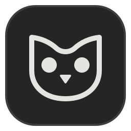

01 / UNDERSTAND
 正在读懂这一帧
正在读懂这一帧画面里的细节，
变成找得回的线索。
从视频画面生成中文标签与摘要。场景、动作、镜头与风格，成为下一次搜索的起点。

Owl.拖入视频，让 AI 整理画面与标签。
把翻找文件夹的时间，还给创作。
专为 Windows 设计 · 本地视频素材库
试试“山川”“城市”或“海岸”。
不是一张截图。试着搜索，或切换到「标签」。画面与数据均为演示示例
不必记住每一个文件名。
让画面自己介绍自己，让灵感再次相遇。
正在读懂这一帧从视频画面生成中文标签与摘要。场景、动作、镜头与风格，成为下一次搜索的起点。
按住 Shift 拖动视频，唤出悬浮收纳盒。
松手投递，继续手头的创作。
原视频留在原位置，本地索引轻装管理。
选择本地模型，下载完成后即可离线打标；
也可连接你熟悉的云端视觉模型。
拖入主窗口，或用 Shift 唤出收纳盒。
MP4、MOV、MKV 等常见格式都能收。
自动生成封面；配置视觉模型后，
生成中文标签与摘要。整理在后台继续。
搜索关键词，或沿着标签浏览。
悬停看预览，按下空格，回到那一刻。
不会。Owl 记录视频的原路径，在本地保存封面、标签和摘要，原视频仍留在原来的位置。移动文件后，可以在属性栏重新关联。
使用本地模型时，请求只发送到本机的 Ollama。使用云端模型时，所选服务会收到文件名和最多六张抽取的画面，不会上传完整视频。具体数据处理方式取决于你的模型服务。
Owl 支持云端视觉模型 API、自定义兼容服务，以及本地 Qwen 视觉模型。下载并启用本地模型后，可以离线打标。本地模型的速度取决于电脑配置；云端 API 的费用由所选服务决定。
当前面向 Windows x64，支持 MP4、MOV、M4V、AVI、MKV 和 WebM。部分编码的预览能力取决于系统环境，也可以双击视频，使用系统默认播放器打开。
当前产品版本为 v0.3.1，官网公开下载尚未开放。你可以先体验本页的素材库演示，了解搜索、标签浏览和素材详情的使用方式。
Owl for Windows · 给灵感一个安静的家